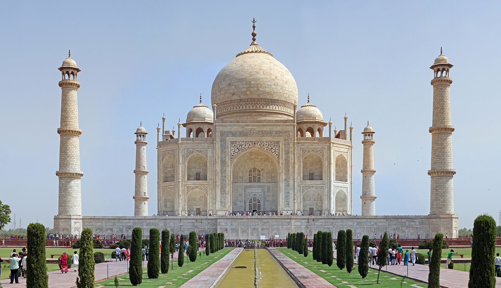

|  |
El Taj Mahal (hindi: ताज महल Tāj Mahal, urdu: تاج محل Tāŷ Mahal 'Corona de los palacios'; /tɑːʒ mə'hɑl/) es un
monumento funerario construido entre 1631 y 1654 en la ciudad de Agra, estado de Uttar Pradesh (India), a orillas del
río Yamuna, por el emperador musulmán Shah Jahan de la dinastía mogol. El imponente conjunto de edificios se erigió en
honor de su esposa favorita, Arjumand Banu Begum —más conocida como Mumtaz Mahal— que murió en el parto de su decimocuarto
hijo. Se estima que en su construcción trabajaron unos 20 000 obreros bajo dirección de un conjunto de arquitectos
liderados por el arquitecto de la corte, Ustad Ahmad Lahori. |